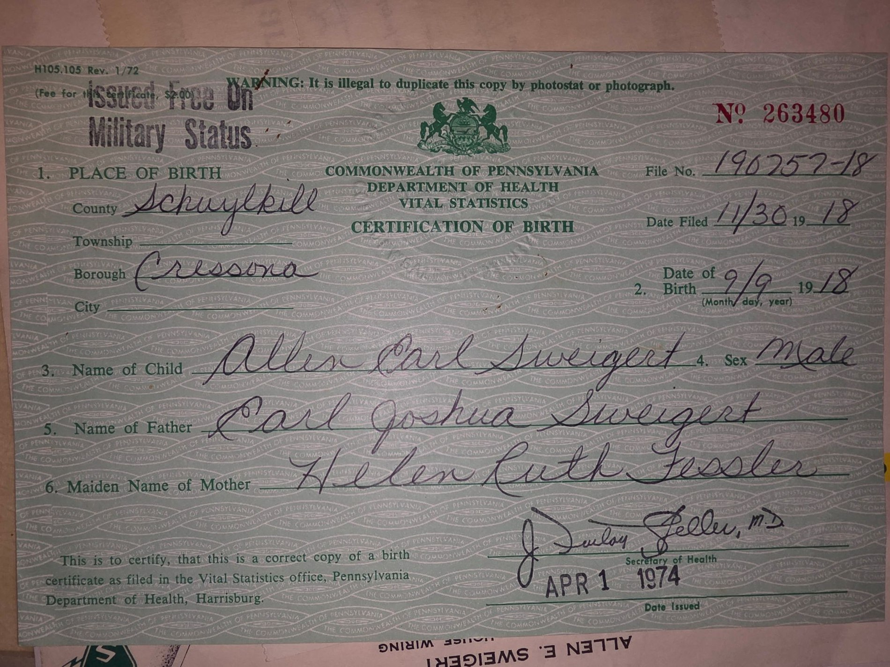
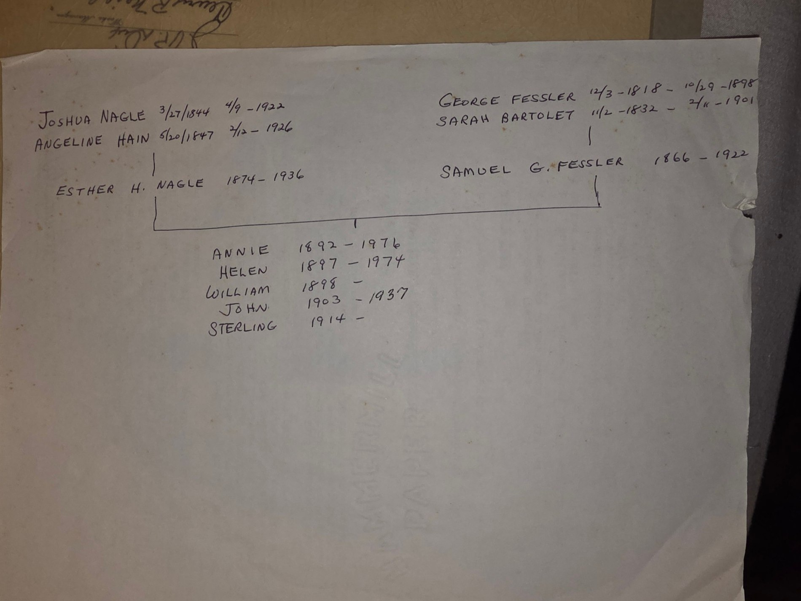
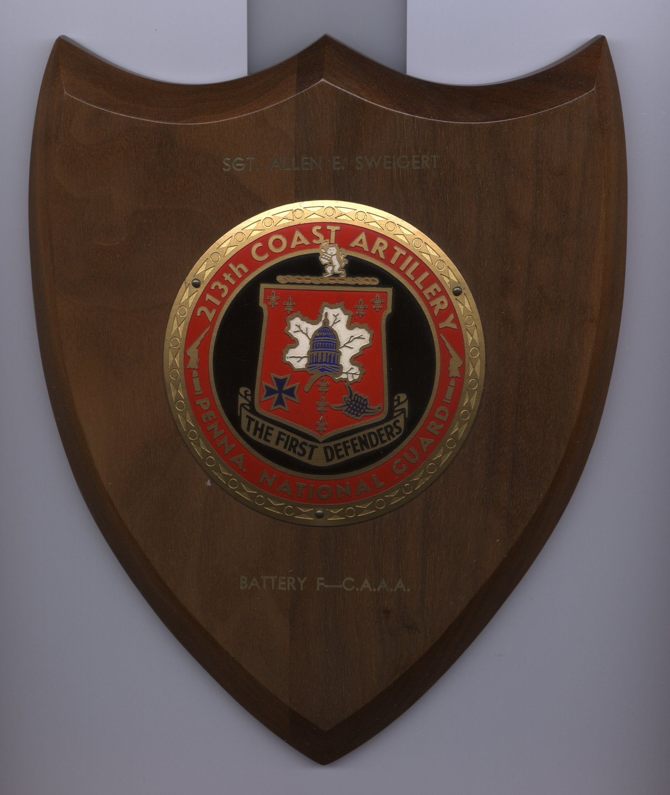
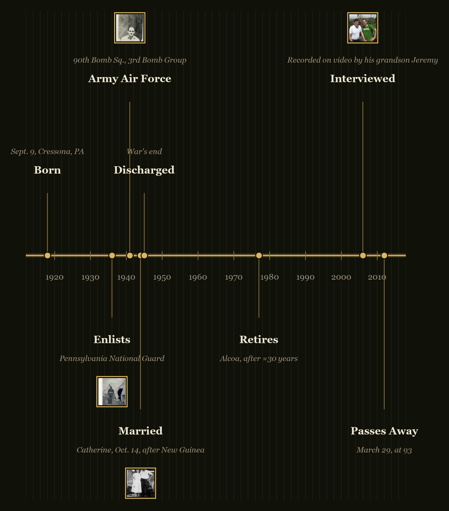
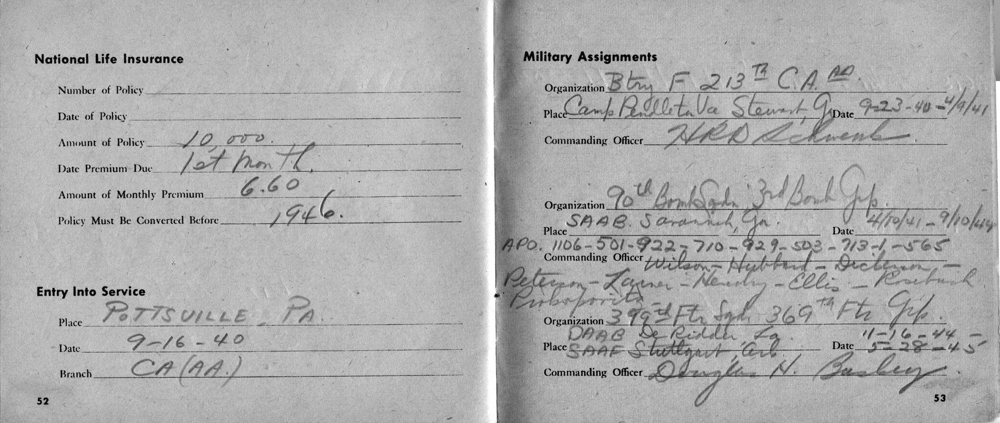
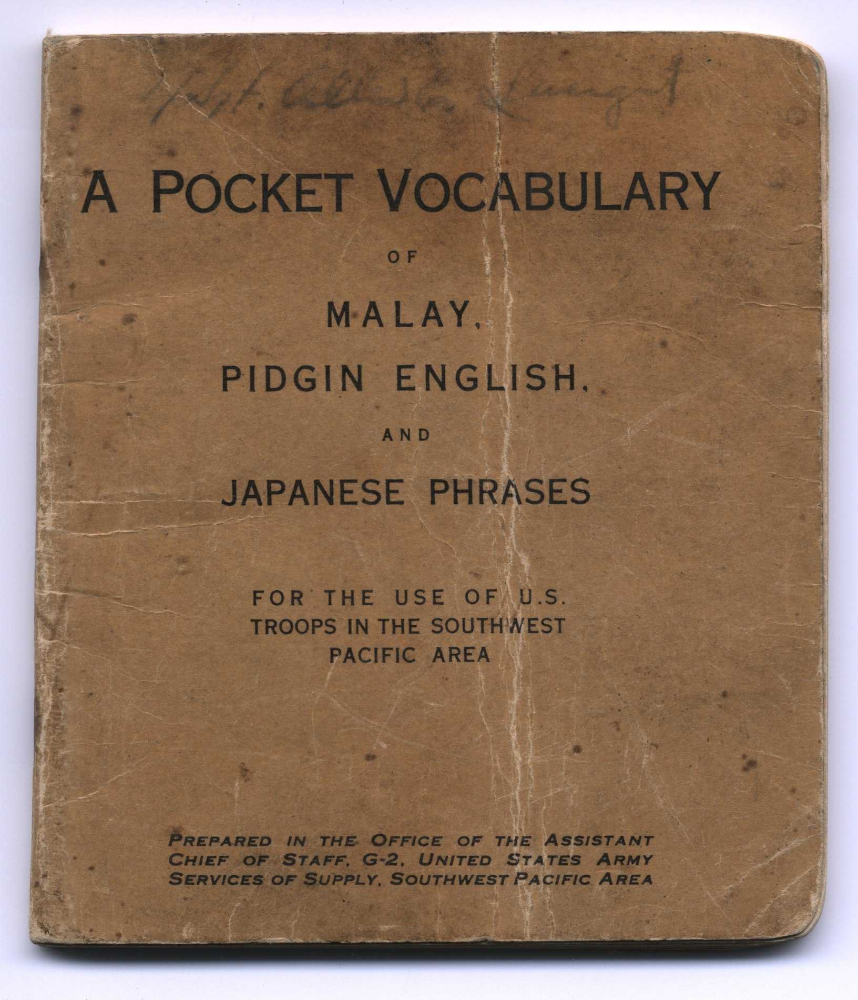
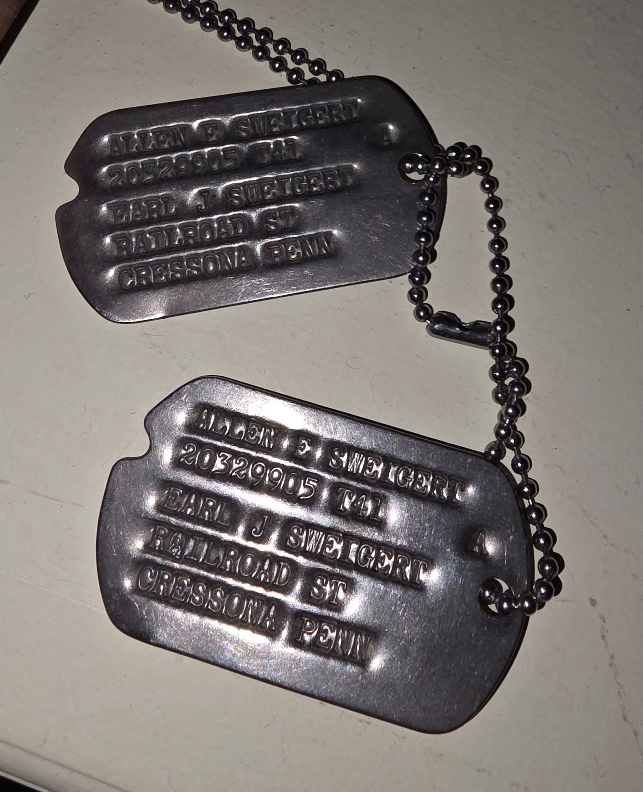
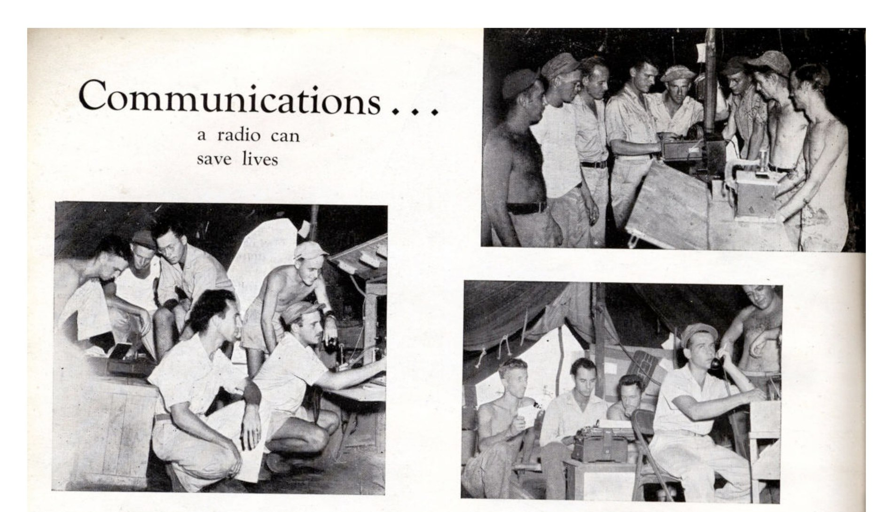

About This Document
his is an illustrated oral history built from two home-video tapes recorded in July 2006 — Pap's Interview Pt 1.MPG (about 87:04 long) and Pap's Interview Pt 2.MPG (about 14:04 long) — combined with roughly a hundred photographs and documents from Allen's own WW2-era collection and the wider family archive, plus historical research into his unit's combat record.
What makes this collection unusual is how completely it survives together, in one family's hands: a first-person account recorded in his own voice; his personal service record book, filled in by his own hand at every posting; his own copy of his group's unit history; the physical artifacts he carried home from New Guinea and Australia — occupation currency, Japanese surrender leaflets, a field phrasebook inscribed with his name, an original issue of the Allied troop newspaper Guinea Gold — two of his actual flight suits, and hundreds of his own wartime photographs, most never printed or shown until now. No comparative figures exist for how many individual WW2 veterans' collections combine an oral history, a documented service record, period artifacts, uniforms, and a photographic archive of this size — that isn't something anyone tracks — but each piece on its own is uncommon to see survive at all, let alone together.
Most of the photographs are unpublished originals. Combat-zone photography in the Pacific theater was subject to unit censorship — official prints cleared for release carried a censor's approval stamp on the back. A large share of Allen's photographs carry no such stamp, meaning they never went through that official release process; he appears to have kept and carried these home outside it. By the family's own count, roughly nine in ten of the photographs in his collection are original prints that have never been published or shown publicly anywhere before this document.
The tape carries physical damage — scattered broadband noise bursts (pops and dropouts), on top of the low-bitrate audio the original 2006 digitization already had (its frequency range was capped at roughly 6 kHz at the source; that is a property of the original capture, not something recoverable now). Before transcription, the audio was de-clicked, adaptively denoised, and loudness-normalized.
Source formats, for the record: Allen's two interview tapes survive as DVD-Video (MPEG-2, 720×480, MP2 audio at 48 kHz) — a 2006 digitization of the original analog home-video tape. Catherine's 2013 interview was shot on a digital camcorder as AVCHD (H.264, 1280×720, AC3 audio); a 2018 recording exists as raw HDV (H.264, 1920×1080) with a compressed web export. All transcription used faster-whisper large-v3 on 16 kHz mono audio extracted from these sources; originals and digitized copies remain in the family archive.
The transcript is machine-generated (faster-whisper, large-v3), unproofread against the tape. Low-confidence stretches — almost always where a noise burst landed on his voice — are shown in italics as a flag, not a correction.
Of 216 paragraphs in Part 1, 10 contain a flagged low-confidence stretch; of 10 in Part 2, 3 do.
A small number of decoder repeat artifacts were removed — a known faster-whisper failure where the model re-emits a phrase it just said, stamped with an impossibly short duration. These were told apart from genuine repeated speech using an objective test: a repeat is kept only if its own duration allows at least 0.15 seconds per word. A handful failed that test and were dropped; every other word is unchanged.
A few badly segmented stretches had their missing sentence breaks mechanically restored using each fragment's own pause length — never rewording, only re-punctuating.
Speaker labels are a disclosed guess, not a verified feature — this is a single mixed audio track from a home camcorder. ALLEN and indented italic JEREMY lines are guessed from whether a line reads like a question or a prompt, which fails in one predictable way: when Allen quotes dialogue inside his own story (“he says, what's going to happen?”), the question mark reads as Jeremy asking. The family caught 29 lines the text-only guess got backwards this way, plus the opening exchange, and all are corrected directly below rather than left for a reader to catch; the same kind of correction can still be made anywhere else it's needed.
Several corrections were applied directly, confirmed by the family rather than guessed: the model misheard “Allen” as “Alan,” “Scott Field” as “Scottfield,” Allen's nickname for Catherine (“Gram”) as the name “Graham,” and his hometown “Cressona” as “Crescent” (confirmed against his own obituary). No other wording has been changed.
Two further decoder-hallucination patterns were mechanically cleaned, both verified against the audio's own timing rather than judgment calls: a single stray character from an unrelated script (Whisper briefly hallucinated a Korean syllable glued onto the word “nets”) was removed after a full scan confirmed it was the only such case; and one run of eighteen consecutive “and,”s packed into a 0.3-second segment — physically impossible to say — was collapsed to two, the same rule used for genuine repeated speech elsewhere in this document.
Historical sidebars (shaded boxes) draw on researched public sources about the 3rd Bomb Group, the Battle of the Bismarck Sea, the Hollandia campaign, and the wartime artifacts Allen brought home, cited where they appear. The book layout on the section-divider pages deliberately echoes Allen's own copy of ‘The Reaper's Harvest,’ the 3rd Bomb Group's unit history book, a scan of which appears later in this document.
About Allen E. Sweigert, Sr.
orn September 9, 1918, in Cressona, Pennsylvania, a son of Earl J. and Helen R. (Fessler) Sweigert. Graduated Cressona High School in 1936, in the midst of the Depression, and enlisted that year in the Pennsylvania National Guard — Battery F, 213th Coast Artillery (Anti-Aircraft), “The First Defenders,” a Pottsville-based unit with roots tracing to the first companies that answered Lincoln's 1861 call for troops. Entered federal service at Pottsville, PA, September 16, 1940. Mobilized to Camp Pendleton/Camp Stewart, Virginia and Georgia. Discharged from the Guard and enlisted in the Army Air Force at Savannah, Georgia, April 10, 1941. Assigned to the 90th Bomb Squadron, 3rd Bomb Group (the “Grim Reapers”), and sent to radio school at Scott Field, Illinois, before returning to his squadron. Served with the 90th in New Guinea and Australia through September 1944, rising to master sergeant, in a unit that pioneered low-level B-25 strafing tactics. Returned stateside and, from November 1944 to May 1945, served with the 399th Fighter Squadron, 369th Fighter Group.
He married Catherine S. Kline on October 14, 1944, a week after coming home from the war. The couple settled in Cressona, where Allen put his Army radio training to work running his own shop, “Allen E. Sweigert: Radios, Electrical Appliances,” on Chestnut Street, then completed Coyn Electrical School in Chicago in 1946 and spent the rest of his career as an electrical foreman for Alcoa, retiring in 1977. He was a member and property committee chairman of St. Mark's United Church of Christ, Cressona; a charter member and past president of the Cressona Lions Club, recipient of its Melvin Jones Fellow Award; and a sixty-year member and past commander of American Legion Post 286, Cressona. He and Catherine raised two sons, Allen E. “Buddy” Jr. (1947–2020) and John S., and had two grandchildren, Jessica M. and Jeremy A. Sweigert. Allen Sr. passed away March 29, 2012, at 93, at Schuylkill Medical Center, and is buried with military honors in Cressona Cemetery.



A Life in Brief

His Military Record, In His Own Handwriting
Transcribed from Allen's personal service record book, which he filled in himself during the war.
| Organization | Place | Dates | Commanding Officer(s) |
|---|---|---|---|
| Battery F, 213th Coast Artillery (A.A.) | Camp Pendleton, VA → Camp Stewart, GA | 9-23-40 to 4-10-41 | H.R.D. Schwenk |
| 90th Bomb Squadron, 3rd Bomb Group | SAAB Savannah, GA → overseas (APOs 1106, 501, 922, 710, 929, 503, 713-1, 565) | 4-10-41 to 9-10-44 | Wilson – Hubbard – Dickerson – Peterson – Lasner – Hendry – Ellis – Kretzsch – Priboroski |
| 399th Fighter Squadron, 369th Fighter Group | DAAB DeRidder, LA → SAAF Stuttgart, AR | 11-16-44 to 5-28-45 | Douglas N. Bagley |
Full names for five of the commanding officers Allen listed by surname, found in the 3rd Bomb Group's own published unit history: Wilson is 1st Lt. Bennett G. Wilson; Hubbard is Lt. Col. Ronald D. Hubbard; Dickerson (Allen's own spelling) is Maj. Wesley E. Dickinson; Peterson is Maj. Raymond T. Peterson; Ellis is Lt. Col. Richard H. Ellis. Lasner, Hendry, Kretzsch, and Priboroski were not found in that source's decorations roster and remain surnames only.


His Discharge Papers
His official “Enlisted Record and Report of Separation,” issued at the Separation Center, Fort Dix, New Jersey, June 8, 1945 — the government's own record, alongside his personal one above.
![Serial No. 20 329 905; Military Occupational Specialty, Communication Chief (542); campaigns credited: Bismarck Archipelago, East Indies, New Guinea, Northern Solomons, Papua (GO 33 WD 45); decorations: Good Conduct Medal (GO 3, Hq 3d Attack Gp, 2 Aug 43), American Defense Service Medal, and Distinguished Unit Badge (GO 3, Hq 3d Attack Gp, 25 Mar 44). Departed for the Southwest Pacific Theater January 31, 1942; arrived back in the USA September 29, 1944 — 2 years, 7 months, 29 days of foreign service. Separated for the “Convenience of the Government,” mustered out with $300 plus $42.20 travel pay.](images/discharge-paper-968267d4.jpg)


Explore the Archive
The Reaper's Harvest
The 3rd Bomb Group's own published unit history — aircraft, commanders, and the men of the 90th Squadron.
Chapter 02Pennsylvania National Guard
1936–1940: Battery F, 213th Coast Artillery, before the Air Force.
Chapter 03Interview — Part 1
The full 2006 interview transcript, in his own words, with photographs keyed to the moment he describes.
Chapter 04Interview — Part 2
The continuation, recorded the following day.
Chapter 05The Home Front
Family, courtship, and life after the war — in Catherine's own words, too.
Chapter 06Decorations & Honors
His service medals, insignia, and sixty years with American Legion Post 286.